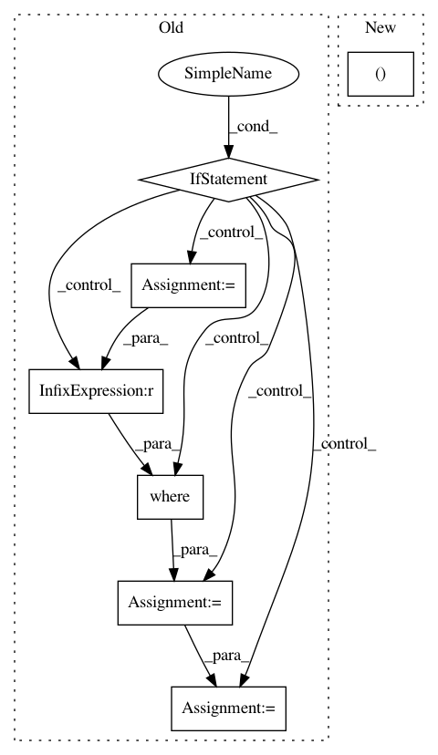

5f078112011a66a93432cb6d38c03935a10f382e,tensorly/decomposition/candecomp_parafac.py,,non_negative_parafac,#Any#Any#Any#Any#Any#Any#Any#Any#Any#Any#Any#Any#Any#Any#,427
Before Change
denominator = tl.clip(denominator, a_min=epsilon, a_max=None)
factor = factors[mode] * numerator / denominator
if normalize_factors:
weights = tl.norm(factor, order=2, axis=0)
weights = tl.where(tl.abs(weights) <= tl.eps(tensor.dtype),
tl.ones(tl.shape(weights), **tl.context(factors[0])),
weights)
factor = factor/(tl.reshape(weights, (1, -1)))
factors[mode] = factor
if tol:
// ||tensor - rec||^2 = ||tensor||^2 + ||rec||^2 - 2*<tensor, rec>
After Change
factors[mode] = factor
if normalize_factors:
weights, factors = kruskal_normalise((weights, factors))
if tol:
// ||tensor - rec||^2 = ||tensor||^2 + ||rec||^2 - 2*<tensor, rec>
In pattern: SUPERPATTERN
Frequency: 3
Non-data size: 7
Instances
Project Name: tensorly/tensorly
Commit Name: 5f078112011a66a93432cb6d38c03935a10f382e
Time: 2020-07-10
Author: git@ameyer.me
File Name: tensorly/decomposition/candecomp_parafac.py
Class Name:
Method Name: non_negative_parafac
Project Name: nipy/dipy
Commit Name: 3202b9db141e612f93a05cbee39624e18f30994a
Time: 2016-08-18
Author: shahnawaz.ahmed95@gmail.com
File Name: dipy/reconst/ivim.py
Class Name: IvimModel
Method Name: fit
Project Name: brainiak/brainiak
Commit Name: 9844e657a565158d7e46b0900270b21fbcc38d82
Time: 2017-08-09
Author: lcnature@users.noreply.github.com
File Name: brainiak/reprsimil/brsa.py
Class Name: BRSA
Method Name: _prepare_DF